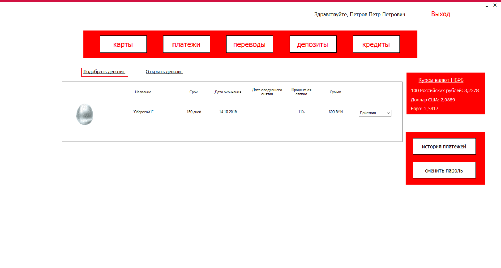
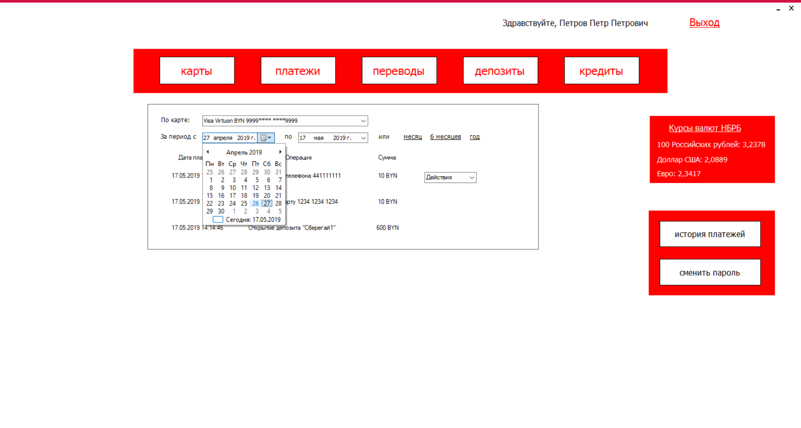

Назначение приложения
Программное средство необходимо для симуляции работы с банковскими операциями (открытие кредита, открытие депозита, перевод средств, создание банковской карты, оплата платежей), а также обучения пользователей работе с вышеперечисленными банковскими операциями и интернет-банкингом в целом.
Регистрация новых пользователей
Для того чтобы начать процедуру регистрации вам необходимо нажать на кнопку «Регистрация», как показано на рисунке 1.1.
Рисунок 1.1
Далее вам необходимо пройти 3 шага.
Шаг 1. Введите номер вашей карты и ФИО, как показано на рисунках 1.2 и 1.3.
Рисунок 1.2
Рисунок 1.3
Шаг 2. Введите PIN-код вашей карты, как показано на рисунках 1.4 и 1.5.
Рисунок 1.4
Рисунок 1.5
Шаг 3. Придумайте и введите логин и пароль, как показано на рисунках 1.6 и 1.7. Пароль должен состоять из цифр, строчных и прописных символов, а также иметь длину не менее 8 символов.
Рисунок 1.6
Рисунок 1.7
Если вы все сделали правильно, то в конце получите сообщение, смотреть рисунок 1.8.
Рисунок 1.8
Авторизация пользователей
Для авторизации вам необходимо ввести логин и пароль в соответствующие поля и нажать кнопку «Вход», как показано на рисунках 2.1 и 2.2.

Рисунок 2.1
Рисунок 2.2
Если данные верны вы должны перейти на главную страницу приложения.
Если у вас нет логина и пароля, вам необходимо пройти регистрацию.
Страница "Карты"
Подбор банковской карты. Для подбора новой карты нажмите на кнопку «Подобрать карту», как показано на рисунке 3.1.
Рисунок 3.1
В открытом окне задайте параметры подбора: платежную систему и вид. Далее нажмите на кнопку «Подобрать», как показано на рисунках 3.2 и 3.3. Здесь же вы можете оформить понравившуюся карту, нажав на кнопку «Оформить». Кнопки «Оформить» и «Новая карта+» идентичны.
Рисунок 3.2
Рисунок 3.3
Создание новой карты. Для создания карты вам необходимо заполнить форму, как показано на рисунке 3.4 и 3.5. Для этого вам необходимо выбрать платежную систему, валюту и срок действия вашей новой карты.
Рисунок 3.4
Рисунок 3.5
Действия с картой. Рядом с каждой картой есть список доступных действий, таких как сделать расчетной, настроить sms-оповещение, изменить PIN и заблокировать. Данный список изображен на рисунках 3.6-3.10.
Рисунок 3.6
Рисунок 3.7
Рисунок 3.8
Рисунок 3.9
Рисунок 3.10
Страница "Платежи"
Для проведения платежа вам необходимо выбрать одну из категорий, изображенных на рисунке 4.1.
Рисунок 4.1
После выбора необходимой категории будет открыто окно для ввода информации (в данном случае для пополнения счета телефона), показанное на рисунках 4.2 и 4.3.
Рисунок 4.2
Рисунок 4.3
Далее необходимо ввести сумму платежа и PIN-код.
Если все введено вам будет предоставлен карт-чек, который вы можете сохранить или распечатать. Карт-чек показан на рисунке 4.4.
Рисунок 4.4
Страница "Переводы"
Для совершения перевода необходимо заполнить форму, показанную на рисунках 5.1 и 5.2.
Рисунок 5.1
Рисунок 5.2
Нажать кнопку «Перевести».
Если данные верны, вы получите сообщение, показанное на рисунке 5.3.
Рисунок 5.3
Страница "Депозиты"
Подбор депозита. Для подбора депозита нажмите на кнопку «Подобрать депозит», как показано на рисунке 6.1.

Рисунок 6.1
В открытом окне задайте параметры подбора: валюта, процентная ставка и срок. Далее нажмите на кнопку «Подобрать», как показано на рисунке 6.2. Здесь же вы можете оформить понравившийся депозит, нажав на кнопку «Оформить».
Рисунок 6.2
Открытие депозита. Для открытия депозита вам необходимо заполнить форму, как показано на рисунке 6.3 и 6.4. Для этого вам необходимо выбрать тип депозита, карту для пополнения и сумму. Если данные верны вы сможете увидеть новый депозит на странице «Депозиты», как показано на рисунке 6.5.
Рисунок 6.3
Рисунок 6.4
Рисунок 6.5
Действия с депозитом. Рядом с каждым депозитом есть список доступных действий. Данный список изображен на рисунках 6.6-6.7. Действия могут отличаться в зависимости от депозита!
Рисунок 6.6
Рисунок 6.7
Страница "Кредиты"
Подбор кредита. Для подбора кредита нажмите на кнопку «Подобрать кредит», как показано на рисунке 7.1.
Рисунок 7.1
В открытом окне задайте параметры подбора: валюта, процентная ставка и срок. Далее нажмите на кнопку «Подобрать», как показано на рисунке 7.2. Здесь же вы можете оформить понравившийся кредит, нажав на кнопку «Оформить».
Рисунок 7.2
Открытие кредита. Для открытия кредита вам необходимо заполнить форму, как показано на рисунке 7.3 и 7.4. Для этого вам необходимо выбрать тип кредита, карту для вывода и сумму. Если данные верны вы сможете увидеть новый кредит на странице «Кредиты», как показано на рисунке 7.5.
Рисунок 7.3
Рисунок 7.4
Рисунок 7.5
Действия с кредитом. Рядом с каждым кредитом есть список доступных действий. Данный список изображен на рисунках 7.6-7.7. Действия могут отличаться в зависимости от кредита!
Рисунок 7.6
Рисунок 7.7
История платежей
Для просмотра истории платежей нажмите на кнопку «История платежей», как показано на рисунке 8.1.
Рисунок 8.1
Далее выберите интересующую вас карту. Также вы можете выбрать период времени, как показано на рисунках 8.2 и 8.3.

Рисунок 8.2
Рисунок 8.3